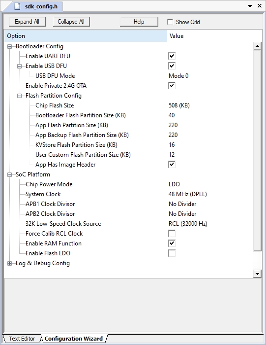
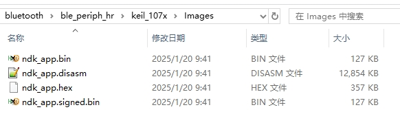
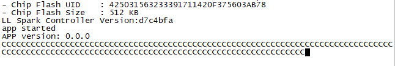
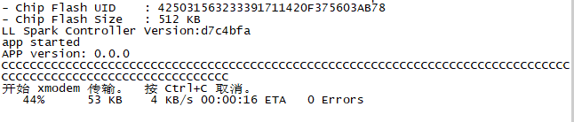
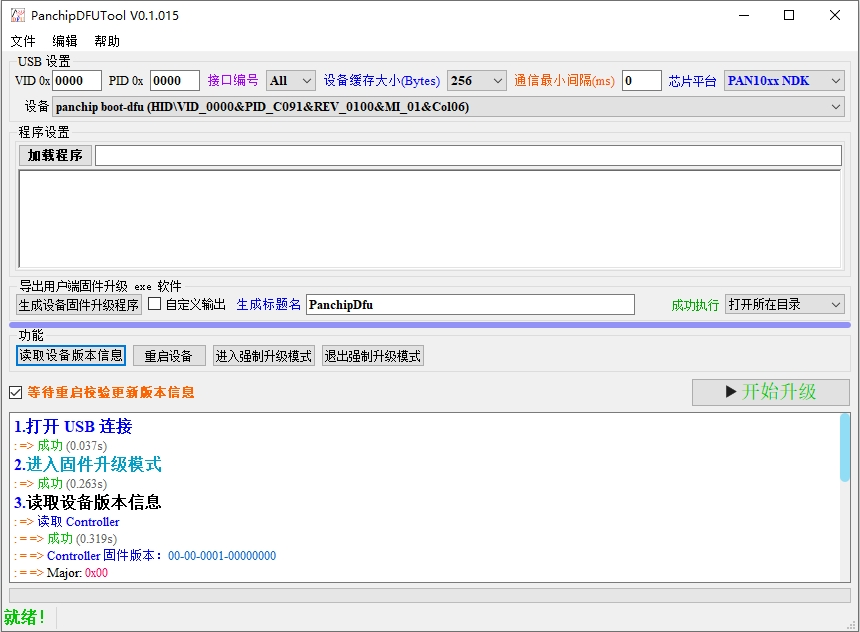
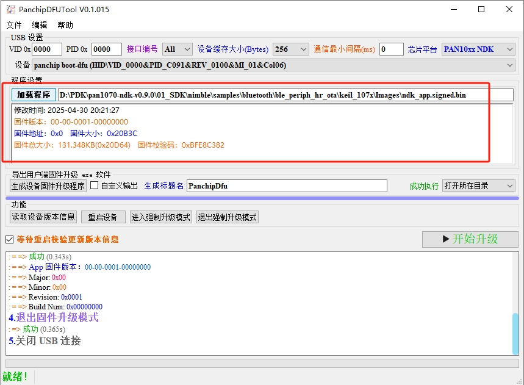
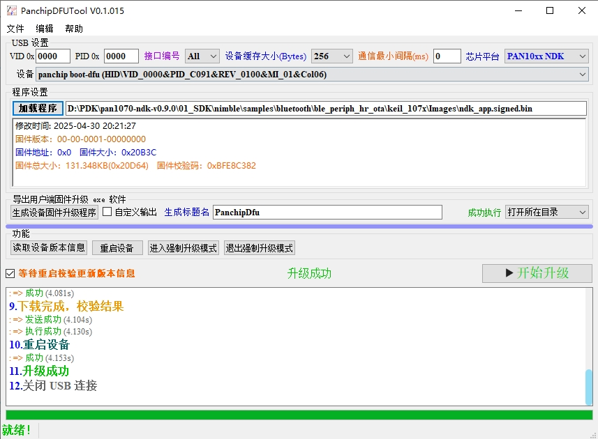

NDK Bootloader 开发指南¶
1. 背景介绍¶
BootLoader 是一个系统引导程序，用于引导 App 软件初始化、支持 DFU/OTA 升级等。由于实际产品中 BootLoader 是不可以或者很难更新的，因此一个稳定且易用的 BootLoader 是对整个系统的一个基本保障。
NDK Bootloader 例程代码位于：
<PAN10XX-NDK>\01_SDK\nimble\mcu_boot\目录下。
2. Bootloader Config 配置¶
与 App 工程类似，Bootloader 工程中也提供了一个名为 sdk_config.h 的配置文件，但其配置项与 App 中的有所差异：

Bootloader Config File¶
2.1 Bootloader Config¶
Bootloader Config 是与当前 Bootloader 工程相关的配置，包括 Bootloader 支持功能的选择、Flash 分区配置等项目：
Enable UART DFU：使能 Bootloader UART DFU 功能
此功能基于 Xmodem 协议实现
Enable USB DFU：使能 Bootloader USB DFU 功能
通过子配置 USB DFU Mode 可以选择当前 USB DFU 升级模式，在不同模式下，USB DFU 上位机工具会执行不同的命令交互流程，具体解释如下：
Select USB DFU mode, which would notify DFU Host (Panchip DFU Tool) to decide what to do when new image has been successfully upgrade to SoC flash (CRC ok). Mode 0: -> [Behavior] a. Jump to App (cmd 0x04 DFU End, param 0x00); b. DFU End -> [Note] For this mode, bootloader itself has responsibility to provide a way for entering USB DFU flow (such as key press event). Mode 1: -> [Behavior] a. Erase DFU flag on flash (cmd 0x06 DFU Force Upgrade, param 0x01); b. Stay in bootloader unless reset; c. DFU End -> [Note] App should set DFU flag to indicate bootloader to enter USB DFU proc. Mode 2: -> [Behavior] a. Erase DFU flag on flash (cmd 0x06 DFU Force Upgrade, param 0x01); b. Jump to App (cmd 0x04 DFU End, param 0x00); c. DFU End -> [Note] App should set DFU flag to indicate bootloader to enter USB DFU proc. Mode 3: -> [Behavior] a. Jump to App (cmd 0x04 DFU End, param 0x00); b. Wait for App USB enum OK; c. App Erase DFU flag on flash (cmd 0x06 DFU Force Upgrade, param 0x01); c. DFU End -> [Note] App should support USB HID, and support the DFU cmd 0x06 (DFU Force Upgrade) to set/erase DFU flag.
默认的 Mode0 支持通过 EVB 按键 KEY2 进入 Bootloader USB DFU 流程
Enable Private 2.4G OTA：使能 Bootloader 私有 2.4G OTA 功能
此功能基于 Panchip 私有 2.4G OTA 升级协议实现
Flash Partition Config：配置与 Bootloader 相关的 Flash 分区起始地址和大小（注意此处 Flash 分区配置需与 App 工程中的 sdk config 配置保持一致！）
Chip Flash Size：指定当前芯片的 Flash 大小，需与实际使用的芯片 Flash 大小保持一致
目前 PAN107x 芯片的 Flash 大小均为 512KB（其中尾部 4KB 为保留区域，存放芯片出厂校准信息，因此用户可用的实际空间为 508KB）
目前 PAN101x 芯片的 Flash 大小均为 256KB（其中尾部 4KB 为保留区域，存放芯片出厂校准信息，因此用户可用的实际空间为 252KB）
Bootloader Flash Partition Size：设置 Bootloader Flash 分区大小（KB）
将此项修改为非 0 值，表示为 Bootloader Image 预留的 Flash 空间大小
App Flash Partition Size：设置当前 App Flash 分区大小（KB）
将此项修改为非 0 值，表示为 App Image 预留的 Flash 空间大小
App Backup Flash Partition Size：设置 App Backup Flash 分区大小（KB）
根据当前项目需要，若需使用 App 备份区（如蓝牙 OTA 场景），则将此项修改为非 0 值
KVStore Flash Partition Size：设置 KVStore Flash 分区大小（KB）
根据当前项目需要，若需使用 KVStore 分区，则将此项修改为非 0 值
User Custom Flash Partition Size：设置 User Custom Flash 分区大小（KB）
根据当前项目需要，若需使用 User Custom 分区，则将此项修改为非 0 值
App Has Image Header：表示 App Image 具有 Image Header
当前 SDK 框架下，若使用 Bootloader，则 App 必须同时使能 App Image Header，所以此选项必须勾上（且应与 App Config 中的对应选项保持一致）
2.2 SoC Platform¶
SoC Platform 是与芯片平台相关的配置，包括时钟、电源、平台相关的特殊 Feature 等项目。
Bootloader 中的此项菜单实际上是 App Config 中对应项菜单的子集，详情参考 NDK Configuration 指南。
2.3 Log & Debug Config¶
Log & Debug Config 是与芯片 Log 功能和调试相关的配置。
Bootloader 中的此项菜单实际上与 App Config 中对应项菜单相同，详情参考 NDK Configuration 指南。
3 BootLoader 升级流程和策略¶
BootLoader 启动的时候，会等待很多个信号，然后依次 trigger 信号的操作。
// signals:
bool sig_key1_push_down(void);
bool sig_key2_push_down(void);
bool sig_ota_start_received(void);
bool sig_back_up_is_completed_image(void);
void sig_hardware_recovery(void);
bool sig_usb_dfu_enter_check(void);
// slots:
void on_usb_dfu_enter(void);
void on_prf_ota_enter(void);
void on_uart_dfu_enter(void);
void on_image_load_enter(void);
连接信号和槽
typedef void (slot_handler_t)(void);
typedef void (signal_handler_t)(void);
void connect(uint8_t priority, signal_handler_t signal, slot_handler_t slot);
事件检测流程
/* If backup image is valid, the on_image_load_enter function will be handled */
ss_connect(0, sig_back_up_is_completed_image, on_image_load_enter);
#if BOOT_ENABLE_UART_DFU
/* when detecting key1 down, the on_uart_dfu_enter function will be handled */
ss_connect(1, sig_key1_push_down, on_uart_dfu_enter);
#endif
#if BOOT_ENABLE_USB_DFU
#if BOOT_USB_DFU_MODE == 0x00 // Use a GPIO Key to trigger entering USB DFU Mode
/* If key2 is pressed down, the on_usb_dfu_enter function will be handled */
ss_connect(2, sig_key2_push_down, on_usb_dfu_enter);
#endif // BOOT_USB_DFU_MODE == 0x00
/* If the DFU flag on flash is detected, the on_usb_dfu_enter function will be handled */
ss_connect(3, sig_usb_dfu_enter_check, on_usb_dfu_enter);
#endif // BOOT_ENABLE_USB_DFU
#if BOOT_ENABLE_PRF_OTA
/* If a 2.4G ota start packet is received, the on_prf_ota_enter function will be handled */
ss_connect(4, sig_ota_start_received, on_prf_ota_enter);
#endif
/* Start to handle all of events related signal functions */
ss_events_handle();
3.1 USB DFU 模式¶
void on_usb_dfu_enter(void);
进入 DFU 流程，插上 USB 后会将其枚举为 Panchip 自定义的 USB-HID 设备，并准备接收 Panchip USB DFU 上位机工具的交互指令。
3.4 Backup DFU 模式¶
尝试校验 Flash App Backup 分区中的固件, 以决定是否要将其搬移至 Flash App 分区。
4. UART DFU 升级详解¶
升级的固件需要签名校验，默认 keil 编译的时候，在工程的同级目录Images下会自动生成 ndk_app.signed.bin 的签名 Image：

4.1 检测并进入 UART DFU 升级模式¶
在 Bootloader Config 配置中使能 UART DFU 功能
编写 UART DFU 进入的 Signal 函数，并将信号和槽连接，槽属于升级流程 BootLoader 已经支持，用户不需要修改。用户可以修改 signal 函数。默认如下：
#if BOOT_ENABLE_UART_DFU /* when detecting key1 down, the on_uart_dfu_enter function will be handled */ ss_connect(1, sig_key1_push_down, on_uart_dfu_enter); #endif /* user can implement a custom signal fucntion */ bool sig_key1_push_down(void) { GPIO_SetMode(P0, BIT6, GPIO_MODE_INPUT); GPIO_EnablePullupPath(P0, BIT6); SYS_delay_10nop(10000); for (uint16_t i = 0; i < 1000; i++) { if (P06 == 1) { return false; } } return true; }
下载 BootLoader 和 App 程序，App 程序配置为带 Bootloader 的方式
4.2 操作流程¶
准备好 Bootloader Image
准备好待升级的 App Image（例如 ble_periph_hr_ota）
使用工具SecureCRT进行升级
打开工具SecureCRT连接设备串口，串口波特率 921600
按住 EVB 底板的 KEY1 按键不松开，然后再按一下 EVB 底板或核心板的 Reset 按钮复位芯片，查看工具 SecureCRT 上 log 打印，一直输出 CCCCCCCCCC

PAN107x UART DFU进入升级模式¶
在工具 SecureCRT 的”传输”界面选择”发送Xmodem(N)”，选择待升级工程的文件，位于image路径下: ndk_app.signed.bin，文件开始传输

PAN107x UART DFU传输文件¶
再次复位芯片，观察串口 log，确认已经打印升级后的程序log
5 USB DFU 升级详解¶
升级的固件需要签名校验，SDK 中 Keil 工程编译的时候，在工程的同级目录 Images 下会自动生成 ndk_app.signed.bin 的签名后 Image：
5.1 检测并进入 USB DFU 升级模式¶
在 Bootloader Config 配置中使能 USB DFU 功能
编写 USB DFU 进入的 signal 函数，并将信号和槽连接，槽属于升级流程 BootLoader 已经支持，用户不需要修改。用户可以修改 signal 函数。默认如下：
#if BOOT_ENABLE_USB_DFU #if BOOT_USB_DFU_MODE == 0x00 // Use a GPIO Key to trigger entering USB DFU Mode /* If key2 is pressed down, the on_usb_dfu_enter function will be handled */ ss_connect(2, sig_key2_push_down, on_usb_dfu_enter); #endif // BOOT_USB_DFU_MODE == 0x00 /* If the DFU flag on flash is detected, the on_usb_dfu_enter function will be handled */ ss_connect(3, sig_usb_dfu_enter_check, on_usb_dfu_enter); #endif // BOOT_ENABLE_USB_DFU /* user can implement a custom signal fucntion */ bool sig_key2_push_down(void) { GPIO_SetMode(P1, BIT2, GPIO_MODE_INPUT); GPIO_EnablePullupPath(P1, BIT2); SYS_delay_10nop(10000); for (uint16_t i = 0; i < 1000; i++) { if (P12 == 1) { return false; } } return true; } bool sig_usb_dfu_enter_check(void) { return is_dfu_flag_valid(); } /* user can implement a custom dfu flag checking flow */ bool is_dfu_flag_valid(void) { const uint32_t flash_sector_start_addr = CONFIG_FLASH_PARTITION_USER_CUSTOM_ADDR + CONFIG_FLASH_PARTITION_USER_CUSTOM_SIZE - 0x1000; // last user custom sector uint8_t dfu_flag; dfu_flag = FMC_ReadByte(FLCTL, flash_sector_start_addr, CMD_DREAD); if (dfu_flag == USB_DFU_ENTER_FLAG) { return true; } else { return false; } }
下载 BootLoader 和 App 程序，App 程序配置为带 Bootloader 的方式
5.2 操作流程¶
准备好 Bootloader Image
准备好待升级的 App Image（例如 ble_periph_hr_ota）
将 EVB 底板的 USB 口连接到 PC
按住 EVB 底板的 KEY2 按键不松开，然后再按一下 EVB 底板或核心板的 Reset 按钮复位芯片，可从 Log 中观察到成功进入了 Bootloader USB DFU 流程：
Try to load HW calibration data.. DONE. - Chip Info : 0x61 - Chip CP Version : 255 - Chip FT Version : 7 - Chip MAC Address : E11000014DE5 - Chip UID : B90801465454455354 - Chip Flash UID : 4250315A3538380B01FD8B435603EF78 - Chip Flash Size : 512 KB (Inc. 4KB Panchip Info Area) Bootloader in.. [I] Check valid image in App Backup Partition.. [I] Entering USB DFU flow.. [I] Found an App Image, version: 0.0.1.0 [I] USB init done, INT_USBE: 0x1c [I] Wait for DFU Comm.. [I] ---USB plug in--- [I] USB isr in: Reset evt [I] USB isr in: Reset evt
打开 NDK 中
05_TOOLS/量产烧录工具/Panhcip DFU Tool目录下的PanchipDFUTool Vx.x.xxx.exe，界面右上角的芯片平台选择 PAN10xx NDK注意：需确保工具版本为
v0.1.015或更高版本
直接点击功能列表中的读取设备版本信息按钮，工具会立刻扫描查找支持 Panchip USB DFU 的 USB-HID 设备，成功后会获取到芯片当前 App 固件版本等信息

识别 USB 设备并获取芯片当前固件版本信息¶
在工具程序设置那里选择加载程序，选择待升级工程的文件，位于 Images 路径下:
ndk_app.signed.bin
上位机工具成功载入待升级的新固件¶
程序加载成功后，点击开始升级按钮，稍等片刻即可升级完成

Bootloader USB DFU 升级成功¶
升级成功后芯片程序会立刻从 Bootloader 跳转到 App 区域执行升级后的新固件